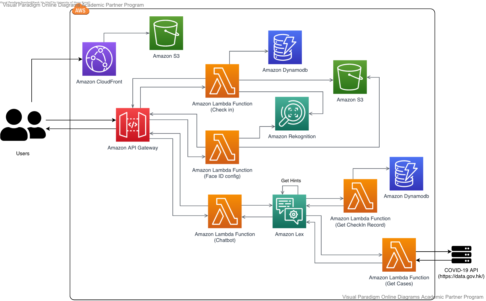

SAffice
Description
I am a "Greedy algorithm" team member responsible for serverless architecture building via AWS cloud (Lambda function+ API Gateway), utilize AWS service to develop the website function such as the Chatbot(Lex), FaceID check-in(Rekognition, DynamoDB), and also host the website(CloudFront, S3), the website frontend connects backend part and the face-mask detection and the social distances detect.
The Hackathon event to be hosted by the City University of Hong Kong and sponsored by AWS, Huawei, SenseTime, Siemens, and Sengital. This event is welcome to all local university students.
SAffice is a smart office system, creating a safe workplace under COVID-19 with services including face mask, social distance detection, chatbot, face check-in and E-sign system, providing humanized technology. As we are placement students from different companies, we discover several problems existed in the workplace under COVID-19 such as pandemic fatigue, employee safety, skills and technical, communication and management problems. We are inspired and hope to solve the above challenges. Hence, while the purpose of developing technology is to serve humankind, our design considers all the range of workers: from managers to staff; from IT experts to computer novices.
Due to the Covid-19 pandemic, as well as the gradually reduced sense of consciousness and pandemic fatigue, millions of workers in Hong Kong have been forced to join the working-from-home(WFH) or AB team experiences. Therefore, through SAffice, you can have face ID check-in when you are WFH, avoiding sending daily email or form; you are tracked with our face mask and social distance detection so that all employees are secured, and it can remind and promote the avoidance of direct contact; you can know the latest virus news and intimate hygiene tips conveniently using our chatbot; managers can easily access to check-in information of staff; E-documents can be shared and signed under our E-signature functions to avoid direct contact and facilitate staff who are not proficient in computer skill!
System Architecture
Project Name
SAffice
About
SAffice is a smart office system, creating a safe workplace under COVID-19 with services including a face mask, social distance detection, chatbot, face check in, and E-sign system, providing humanized technology.